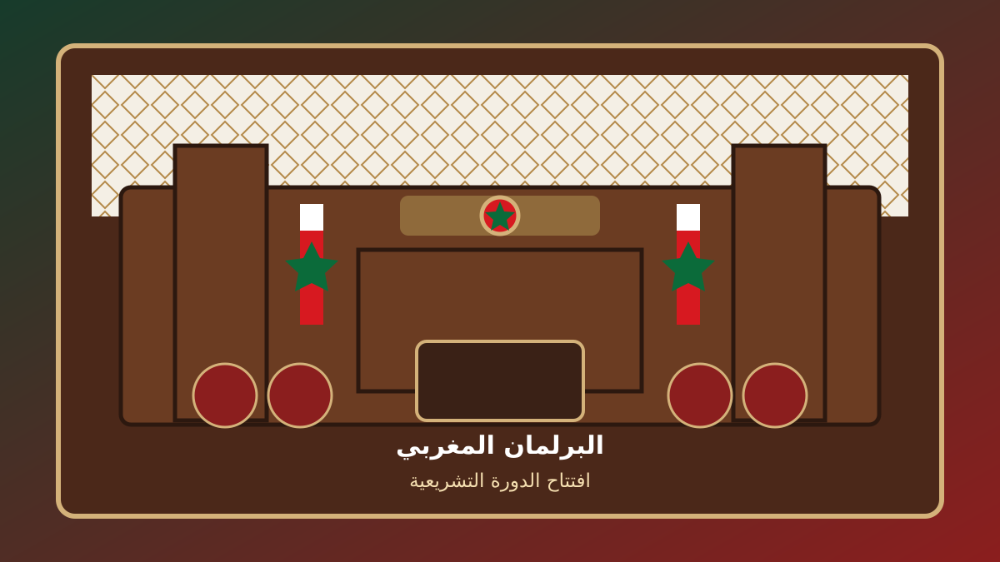

الخطاب الملكي بمناسبة افتتاح الدورة التشريعية.. أبرز المضامين

وجه الملك محمد السادس، يوم الجمعة 9 أكتوبر 2026، خطاباً سامياً إلى أعضاء البرلمان بمناسبة افتتاح الدورة الأولى من السنة التشريعية الأولى من الولاية التشريعية الثانية عشرة، مؤكداً أن المرحلة الجديدة تفتح المجال لمواصلة الإنجازات وتعزيز مكانة المغرب كقوة اقتصادية صاعدة وموثوقة.
النمو الاقتصادي والعدالة الاجتماعية
أكد الملك أن الولاية التشريعية والحكومية الجديدة ينبغي أن تشكل منعطفاً لمواصلة طموح المغرب، مع تحقيق توازن وانسجام بين النمو الاقتصادي وتعزيز العدالة الاجتماعية والمجالية.
الأمن المائي والطاقي والغذائي
دعا الخطاب إلى إطلاق جيل جديد من الاستراتيجيات الكبرى، خصوصاً في مجالات الأمن المائي والطاقي والغذائي، والإقلاع الصناعي، والاقتصاد الرقمي والذكاء الاصطناعي، إلى جانب تطوير القدرات المرتبطة بالاحتياطات الاستراتيجية وتأمين توريد المواد الأساسية.
القطاع الخاص وفرص الشغل
كما دعا الملك القطاع الخاص الوطني إلى الارتقاء بدوره ليصبح فاعلاً استراتيجياً في التحول التنموي، مع مزيد من المبادرة والابتكار والقدرة على خلق فرص الشغل والاستثمار والتصدير.
الشباب في صدارة السياسات العمومية
وشدد الخطاب على ضرورة وضع قضايا الشباب في صدارة السياسات العمومية، من خلال تصور متكامل يضمن تكافؤ الفرص ويشمل التعليم والتأهيل والإدماج الاقتصادي، بما يعزز ثقة الشباب في مستقبلهم وفي مؤسسات وطنهم.
التنمية والجهوية المتقدمة
وأكد الملك أن الرهان الحقيقي للمرحلة المقبلة يتمثل في العمل الميداني على المستوى الترابي، والوقوف على المشاكل الحقيقية لكل منطقة وإيجاد حلول واقعية لها، مع تسريع تنزيل الجهوية المتقدمة وتفعيل اللاتمركز الإداري وتحسين الخدمات العمومية وتحفيز الاستثمار المنتج.
مراجعة نموذج التعاون في مجال الهجرة
وفي ما يخص الهجرة، أكد الملك أن النموذج الحالي للتعاون في هذا المجال أصبح متجاوزاً، مشيراً إلى التحديات التي تواجه التعاون مع إسبانيا، ومشدداً على أن الشراكة اختيار سيادي والتزام إرادي لا ينبغي أن يكون محل ضغط أو تهديد أو ابتزاز.
وأعلن الخطاب أن المغرب سيقدم لشركائه وثيقة تتضمن رؤية استراتيجية واضحة وعملية، تهدف إلى تعزيز التنمية المشتركة والتنافسية الاقتصادية والاستقرار الإقليمي.
رسالة إلى أعضاء البرلمان
وفي ختام الخطاب، أكد الملك أن الانتداب البرلماني يمثل التزاماً سياسياً وتعاقداً أخلاقياً يربط أعضاء البرلمان بالمواطنين، داعياً إلى تحمل المسؤولية الوطنية أمام الله والمواطنين والتاريخ.